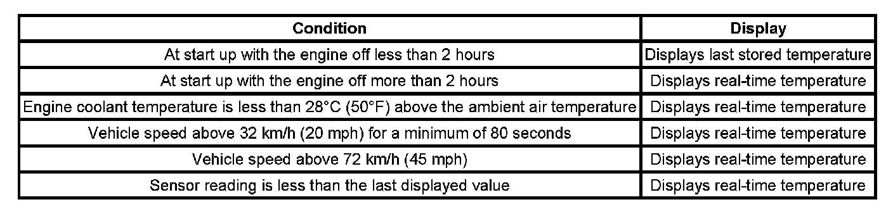

Air Temperature
AIR TEMPERATURE DESCRIPTION AND OPERATION
The air temperature controls are divided into 7 areas:
- HVAC Control Components
- Heating and A/C Operation
- Auxiliary Heating and A/C Operation
- Automatic Operation
- Auxiliary Automatic Operation
- Engine Coolant A/C Cycle
HVAC Control Components
The HVAC control module is a GMLAN device that interfaces between the operator and the HVAC system to maintain air temperature and distribution settings. The battery positive voltage circuit provides power that the control module uses for keep alive memory (KAM). If the battery positive voltage circuit loses power, all HVAC DTCs and settings will be erased from KAM. The body control module (BCM), which is the vehicle mode master, provides a device on signal. The control module supports the features.
Auxiliary HVAC Control Module
The auxiliary HVAC control module is a GMLAN device that receives analog inputs from the front HVAC control assembly and GMLAN message inputs from the rear seat audio control module to maintain auxiliary air temperature and auxiliary air distribution settings. The battery positive voltage circuit provides power that the control module uses for KAM. If the battery positive voltage circuit loses power, all auxiliary HVAC DTCs and settings will be erased from KAM. The auxiliary HVAC control module will perform a recalibration of the electric actuators when commanded with a scan tool or if KAM is lost. This will ensure the actuators are moving with in the calibrated range.
Rear Seat Audio Control Module
The rear seat audio control module is a GMLAN device that interfaces between the rear seat passengers and the auxiliary HVAC control module. The battery positive voltage circuit provides power that the control module uses for KAM. Air temperature, blower motor and air delivery rocker type switches are located on the face of the module. Pressing a switch enables the module to send a GMLAN serial data message to the auxiliary HVAC control module for the change request. The module does not store auxiliary HVAC DTCs.
Air Temperature Actuator
The air temperature actuators are a 5-wire bi-directional electric motor that incorporates a feedback potentiometer. Ignition 3 voltage, low reference, control, 5-Volt reference and position signal circuits enable the actuator to operate. The control circuit uses either a 0, 2.5 or 5 volt signal to command the actuator movement. When the actuator is at rest, the control circuit value is 2.5 volts. A 0 or 5-Volt control signal commands the actuator movement in opposite directions. When the actuator shaft rotates, the potentiometers adjustable contact changes the door position signal between 0-5 volts.
The HVAC control module uses a range of 0-255 counts to index the actuator position. The door position signal voltage is converted to a 0-255 count range. When the module sets a commanded, or targeted, value, the control signal is changed to either 0 or 5 volts depending upon the direction that the actuator needs to rotate to reach the commanded value. As the actuator shaft rotates the changing position signal is sent to the module. Once the position signal and the commanded value are the same, the module changes the control signal to 2.5 volts.
Auxiliary Air Temperature Actuator
The auxiliary air temperature actuator is a 5-wire bi-directional electric motor that incorporates a feedback potentiometer. Ignition 3 voltage, low reference, control, 5-Volt reference and position signal circuits enable the actuator to operate. The control circuit uses either a 0, 2.5 or 5-Volt signal to command the actuator movement. When the actuator is at rest, the control circuit value is 2.5 volts. A 0 or 5-Volt control signal commands the actuator movement in opposite directions. When the actuator shaft rotates, the potentiometers adjustable contact changes the door position signal between 0-5 volts. The auxiliary HVAC control module uses a range of 0-255 counts to index the actuator position. The door position signal voltage is converted to a 0-255 count range. When the module sets a commanded, or targeted, value, the control signal is changed to either 0 or 5 volts depending upon the direction that the actuator needs to rotate to reach the commanded value. As the actuator shaft rotates the changing position signal is sent to the module. Once the position signal and the commanded value are the same, the module changes the control signal to 2.5 volts.
Air Temperature Sensor
The air temperature sensors are a 2-wire negative temperature co-efficient thermistor. The vehicle uses the following air temperature sensors:
- Ambient Air Temperature Sensor
- Inside Air Temperature Sensor Assembly
- Upper Left Air Temperature Sensor
- Upper Right Air Temperature Sensor
- Lower Left Air Temperature Sensor
- Lower Right Air Temperature Sensor
- Upper Air Temperature Sensor - Auxiliary
- Lower Air Temperature Sensor - Auxiliary
A signal and low reference circuit enables the sensor to operate. As the air temperature surrounding the sensor increases, the sensor resistance decreases. The sensor signal voltage decreases as the resistance decreases. The sensor operates within a temperature range between -40° to +101°C (-40° to +215°F). The sensor signal varies between 0-5 volts.
The input of the duct air temperature sensors are different from the ambient and inside air temperature sensors. The HVAC control module converts the signal to a range between 0-255 counts. As the air temperature increases the count value will decrease. If the HVAC control module or auxiliary HVAC control module detects a malfunctioning sensor, then the control module software will use a defaulted air temperature value. The default value for the ambient and inside air temperature sensors will be displayed on the scan tool. The default value for the duct air temperature sensors will not be displayed on the scan tool. The scan tool parameter for the duct air temperature sensors are the actual state of the signal circuit. The default action ensures that the HVAC system can adjust the inside air temperature near the desired temperature until the condition is corrected.

The ambient air temperature sensor mounts underhood and can be affected by city traffic, by idling, and by restarting a hot engine. Therefore, the HVAC control module filters the value of the ambient air temperature sensor for temperature display. The ambient air temperature value is updated under the conditions.
The scan tool has the ability to update the displayed ambient air temperature. To update the ambient air temperature display on the HVAC control module, perform the following procedure: Turn ON the ignition. Simultaneously press the A/C and Recirc switches for 5 seconds.
Sunload Sensor Assembly
The sunload sensor is a 2-wire photo diode. The vehicle uses left and right sunload sensors. The 2 sensors are integrated into the sunload sensor assembly. Low reference and signal circuits enable the sensor to operate. As the light shining upon the sensor gets brighter, the sensor resistance increases. The sensor signal decreases as the resistance increases. The sensor operates within an intensity range between completely dark and bright. The sensor signal varies between 0-5 volts. The HVAC control module converts the signal to a range between 0-255 counts. The sunload sensor provides the HVAC control module a measurement of the amount of light shining on the vehicle. Bright, or high intensity, light causes the vehicles inside temperature to increase. The HVAC system compensates for the increased temperature by diverting additional cool air into the vehicle. If the HVAC control module detects a malfunctioning sensor, then the control module software will use a defaulted sunload value. This value will not be displayed on the scan tool. The default action ensures that the HVAC system can adjust the inside air temperature near the desired temperature until the condition is fixed. The scan tool parameter for the sunload sensor is the actual state of the signal circuit.
A/C Refrigerant Pressure Sensor
The A/C refrigerant pressure sensor is a 3-wire piezoelectric pressure transducer. A 5-Volt reference, low reference, and signal circuits enable the sensor to operate. The A/C pressure signal can be between 0-5 volts. When the A/C refrigerant pressure is low, the signal value is near 0 volts. When the A/C refrigerant pressure is high, the signal value is near 5 volts. The powertrain control module (PCM) converts the voltage signal to a pressure value.
The A/C refrigerant pressure sensor protects the A/C system from operating when an excessively high pressure condition exists. The PCM disables the compressor clutch if the A/C pressure is more than 2957 kPa (429 psi). The clutch will be enabled after the pressure decreases to less than 1578 kPa (229 psi).
The A/C low pressure switch protects the A/C system from a low pressure condition that could damage the A/C compressor or cause evaporator icing. The HVAC control module applies 5 volts to the A/C low pressure switch signal circuit. The switch will open when the A/C low side pressure reaches 151 kPa (22 psi). This prevents the A/C compressor from operating. The switch will then close when A/C low pressure side reaches 275 kPa (40 psi). This enables the A/C compressor to turn back ON.
Heating and A/C Operation
The purpose of the heating and A/C system is to provide heated and cooled air to the interior of the vehicle. The A/C system will also remove humidity from the interior and reduce windshield fogging. The vehicle operator can determine the passenger compartment temperature by adjusting the air temperature switch. The vehicle passenger can offset the passenger temperature as much as 16.7°C (30°F). Regardless of the temperature setting, the following can affect the rate that the HVAC system can achieve the desired temperature:
- Recirculation actuator setting
- Difference between inside and desired temperature
- Difference between ambient and desired temperature
- Blower motor speed setting
- Mode setting
- Auxiliary HVAC settings
The control module makes the following actions when automatic operation is not selected, and an air temperature setting is selected:
- When the air temperature switch is placed in the warmest position, the control module commands the air temperature door to divert maximum air past the heater core.
- When the air temperature switch is placed in the coldest position, the control module commands the air temperature door to direct air to bypass the heater core.
When the air temperature switch is placed between the warmest and coldest positions, the control module monitors the following sensor inputs to determine the air temperature door position that diverts the appropriate amount of air past the heater core in order to achieve the desired temperature:
- Sunload
- Duct temperatures
- Ambient temperature
- Inside temperature
The A/C system can be engaged by either pressing the A/C switch or during automatic operation. The HVAC control module sends a GMLAN message to the powertrain control module (PCM) for A/C compressor engagement. The PCM will provide a ground for the A/C compressor relay enabling it to close its internal contacts to send battery voltage to the A/C compressor clutch coil. The A/C compressor diode will prevent a voltage spike, resulting from the collapse of the magnetic field of the coil, from entering the vehicle electrical system when the compressor is disengaged.
The following conditions must be met in order for the A/C compressor clutch to turn ON if they are not all met and an A/C request is made the LED on the A/C switch will flash:
- Ambient air temperature above 7°C (45°F)
- A/C low pressure switch signal circuit is grounded
- A/C refrigerant pressure sensor parameter is less than 2957 kPa (429 psi)
- PCM receives an A/C request from the HVAC control module
- Engine coolant temperature (ECT) is less than 121°C (250°F)
- The engine rpm is more than 550 RPM
- The throttle position is less than 100 percent
The HVAC control module monitors the A/C low pressure switch signal circuit. If the voltage signal on this circuit has no voltage drop the module will interpret this condition as a low pressure, disabling the A/C request. The A/C low pressure switch will open its internal contacts at 151 kPa (22 psi). Then close the contacts at 275 kPa (40 psi) to resume A/C operation. This switch assists in cycling the A/C compressor and prevents A/C compressor operation if system has a low refrigerant level.
The PCM monitors the A/C refrigerant pressure sensor signal circuit. The voltage signal on this circuit is proportional to the refrigerant pressure inside the A/C high side pressure line. As the pressure inside the line increases, so does the voltage signal. If the pressure is above 2957 kPa (429 psi), the A/C compressor output is disabled. When the pressure lowers to 1578 kPa (229 psi), the PCM enables the compressor to operate.
The sensor information is used by the PCM to determine the following:
- The A/C high side pressure
- An A/C system load on the engine
- An excessive A/C high side pressure
- The heat load at the A/C condenser
Once engaged, the compressor clutch will be disengaged for the following conditions:
- Ambient air temperature is less than 7°C (45°F)
- Throttle position is 100 percent
- The A/C low pressure switch is open
- A/C high side pressure is more than 2957 kPa (429 psi)
- A/C low side pressure is less than 151 kPa (22 psi)
- ECT is more than 121°C (250°F)
- Engine speed is more than 5500 RPM
- Transmission shift
- PCM detects excessive torque load
- PCM detects insufficient idle quality
- PCM detects a hard launch condition
Automatic Operation
In automatic operation, the HVAC control module will maintain the comfort level inside of the vehicle by controlling the A/C compressor clutch, the blower motor, the air temperature actuators, mode actuator and recirculation.
To place the HVAC system in Automatic mode, the following is required:
- The Auto switch must be activated
- The air temperature switch must be in any other position other than full hot or full cold position
Once the desired temperature is reached, the blower motor, mode, recirculation and temperature actuators will automatically be adjusted to maintain the temperature selected. The HVAC control module performs the following functions to maintain the desired air temperature:
Monitor the following sensors:
- Inside Air Temperature Sensor
- Ambient Air Temperature Sensor
- Lower Left Air Temperature Sensor
- Lower Right Air Temperature Sensor
- Upper Left Air Temperature Sensor
- Upper Right Air Temperature Sensor
- Regulate blower motor speed.
- Position the air temperature actuator.
- Position the mode actuator.
- Position the recirculation actuator.
- Request A/C operation.
In automatic operation, the auxiliary HVAC control module will maintain the comfort level inside of the vehicle by controlling the auxiliary blower motor, the auxiliary air temperature actuator and the auxiliary mode actuator.
To place the auxiliary HVAC system in Automatic mode, the following is required:
- The auxiliary blower motor switch on the auxiliary HVAC control assembly must be in the Auto position.
- The auxiliary mode switch on the auxiliary HVAC control assembly must be in the Auto position.
- The auxiliary air temperature switch must be in any other position other than full hot or full cold position.
Once the desired temperature is reached, the auxiliary blower motor, auxiliary mode and auxiliary temperature actuator will automatically be adjusted to maintain the temperature selected. The auxiliary HVAC control module performs the following functions to maintain the desired air temperature:
- Upper Air Temperature Sensor - Auxiliary
- Lower Air Temperature Sensor - Auxiliary
- Regulate auxiliary blower motor speed
- Position the auxiliary air temperature actuator
- Position the auxiliary mode actuator
Engine Coolant
Engine coolant is the essential element of the heating system. The thermostat controls the normal engine operating coolant temperature. The thermostat also creates a restriction for the cooling system that promotes a positive coolant flow and helps prevent cavitation. Coolant enters the heater core through the inlet heater hose, in a pressurized state. The heater core is located inside the HVAC module. The ambient air drawn through the HVAC module absorbs the heat of the coolant flowing through the heater core. Heated air is distributed to the passenger compartment, through the HVAC module, for passenger comfort. Opening or closing the air temperature door controls the amount of heat delivered to the passenger compartment. The coolant exits the heater core through the return heater hose and recirculated back through the engine cooling system.
Remote Start
Remote Start Activation
The following describes the HVAC control head functionality upon receiving the remote start active serial data message and a power mode status is set to off/awake. The outside air temperature (OAT) sensor on automatic systems, is utilized to determine the moding of the following features: Blower Mode (Bi-level, Floor, Defrost, Recirc and Rear Defrost. These features are determined by the intake air temperature (IAT) during activation sequence and are maintained for the duration of engine run time. Calibratable temperatures are utilized to provide low, mid and high temperature ranges for the selectable feature. Blower and mode have the range to select any valid feature positions. When the remote start active serial data is received, ignition-OFF loop HVAC algorithms will act the same as if a run power mode was received, i.e. re-calibration, afterblow, ignition-OFF motor positioning etc. The OFF timer and the ignition ON timer have the functionality as in the Run mode.
Remote Start De-activation
When the remote start is exited, GMLAN power mode equals run mode or remote start engine. In the case of automatic settings, the displays will revert to the actual state of operation of the features, on the basis of their normal control algorithms.